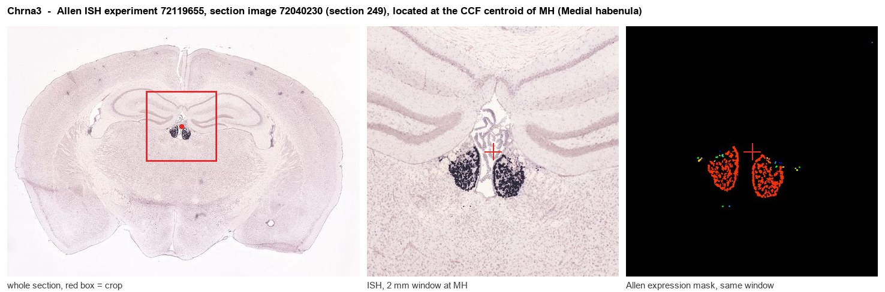
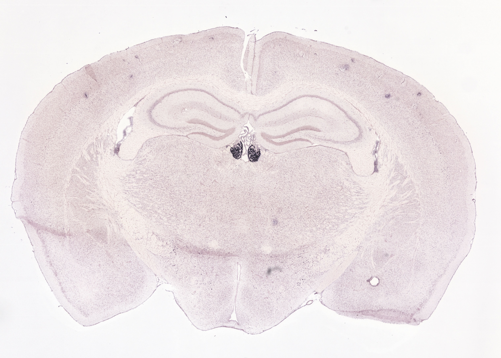
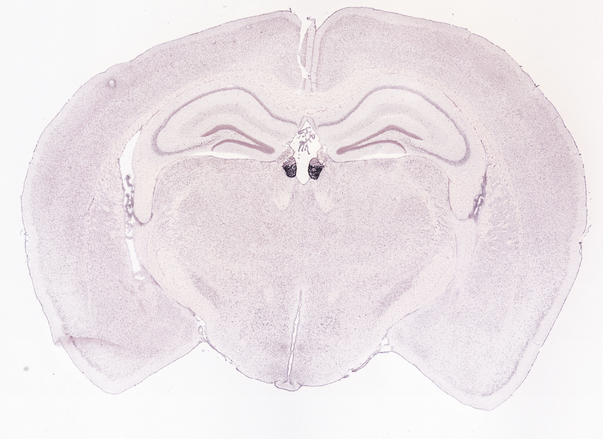
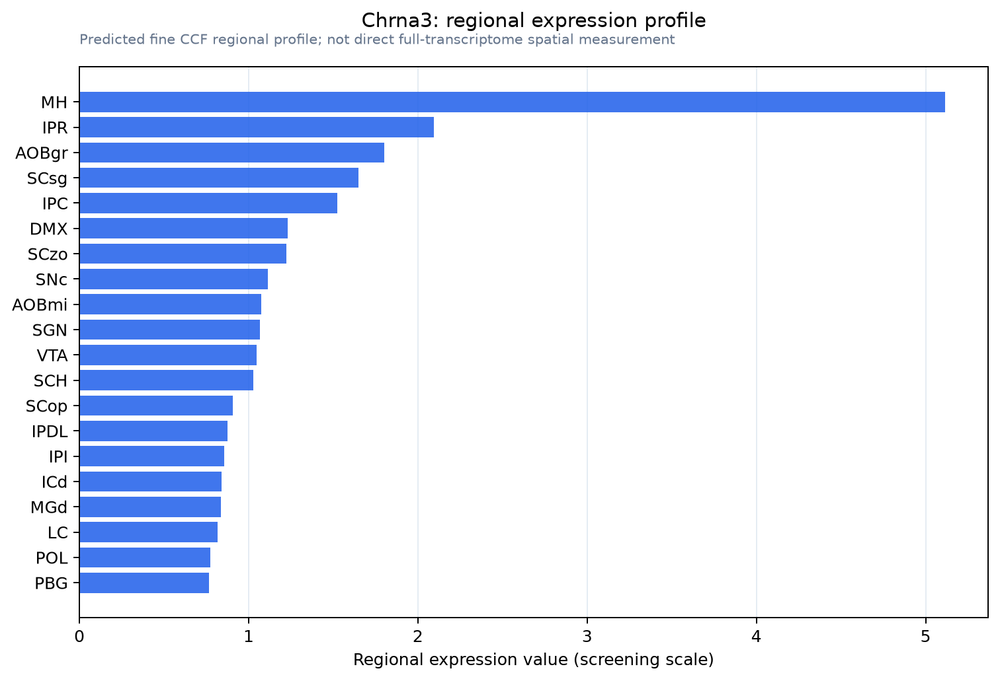

Chrna3
Neuronal acetylcholine receptor subunit alpha-3
Spatial tier: STRICT_EXCLUSIVE · Class: ION_CHANNEL · Top region: MH (Medial habenula) · Positive regions: 7/554
45.4Discovery Score
43.2Targetability Score
CEvidence grade C
What this means: Chrna3: predicted fine-region profile is strict-exclusive, with 7 positive regions out of 554 (limit 12); direct spatial validation is required.
Function in MH: evidence, prediction, innovation
- Gene function
- Chrna3 encodes the alpha-3 subunit of neuronal nicotinic acetylcholine receptors, pentameric ligand-gated cation channels. Alpha-3 assembles mainly with beta-4 (and often alpha-5) to form alpha3beta4* receptors that open on acetylcholine or nicotine binding and depolarise the neuron. Human CHRNA3 variants in the CHRNA5-A3-B4 cluster are among the strongest genetic risk factors for heavy smoking.
- Region function
- The medial habenula is an epithalamic relay whose cholinergic/substance P neurons project almost exclusively through the fasciculus retroflexus to the interpeduncular nucleus. This MHb-IPN axis sets nicotine aversion and withdrawal, fear memory expression, anxiety and negative affect.
- Published in this region
- direct Elayouby et al. 2021 (J Neurosci) showed that Chrna3 hypomorphic mice self-administer more nicotine and that lentiviral shRNA knockdown of Chrna3 in the medial habenula (or IPN) markedly increases nicotine intake, establishing alpha3* receptors here as a brake on consumption. Shih et al. 2014 (J Neurosci) used subunit-GFP knock-in mice to show that alpha3 and beta4 are strongly and uniformly expressed throughout ventral MHb, and Winzer-Serhan & Leslie 1997 (J Comp Neurol) mapped codistributed alpha3/beta4 mRNA to the medial habenula during development.
- Predicted function
- Prediction: alpha3beta4* receptors are the principal nicotine sensor of ventral MHb neurons, so loss of Chrna3 should reduce nicotine-evoked MHb firing and IPN drive, shift the nicotine dose-response toward higher intake, and attenuate somatic and affective withdrawal signs. Selective alpha3beta4 antagonism (AT-1001, alpha-conotoxin AuIB) in MHb should increase nicotine self-administration.
- Innovation
- ★★☆☆☆ 2/5 Alpha3 in MHb is already functionally established, though subunit-specific conditional genetics in defined MHb subnuclei remains incomplete.
- Tools
- Chrna3tm1.1Hwrt hypomorphic mice; alpha3-GFP knock-in reporter lines (Drenan lab); alpha3beta4-selective antagonists AT-1001 and alpha-conotoxin AuIB; lentiviral/AAV shRNA knockdown validated in MHb; commercial alpha3 antibodies.
- References
Direct evidence located at the region

Allen ISH experiment 72119655, section image 72040230 (section 249): the section that contains the CCF centroid of Medial habenula according to the Allen image-to-atlas alignment (reference_to_image), with a 2 mm window around that point. Left: whole section, red box = window. Middle: ISH signal. Right: Allen's expression-mask view of the same window. open this image in the Allen viewer
Look it up yourself: Allen Mouse Brain ISH for Chrna3Allen reference atlas: MH (structure 483)ABC Atlas MERFISH viewer(in the ABC Atlas choose dataset MERFISH-C57BL6J-638850-CCF, colour cells by gene "Chrna3" or by parcellation_substructure "MH")All genes confined to MH + 3-D brain
Direct spatial evidence
MERFISH REGION LOCATOR

DIRECT ALLEN ISH

DIRECT ALLEN ISH

Regional expression figure

Predicted WMB × fine-CCF profile; not direct full-transcriptome spatial measurement.
Spatial profile
Evidence and specificity
- Evidence status
- PREDICTED_FINE
- Direct sources
- None; predicted localization only
- Exclusive threshold
- 12 positive regions out of 554
- Spatial specificity
- 0.333
- Top-region fraction
- 0.113
- Filter status
- PASS
Interpretation limits
- Cell-type-to-region projection is imputed expression, not direct spatial measurement.
- Adult reference atlases do not establish stability across age, sex, strain, state, or disease.
- Transcript abundance does not guarantee protein abundance or genetic-tool performance.